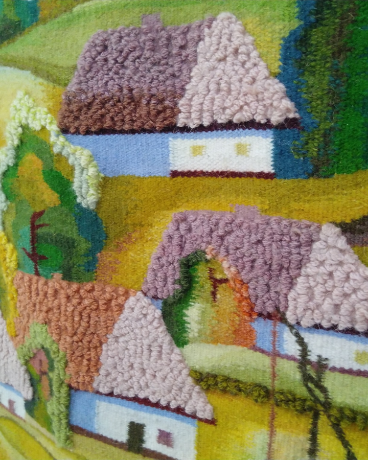
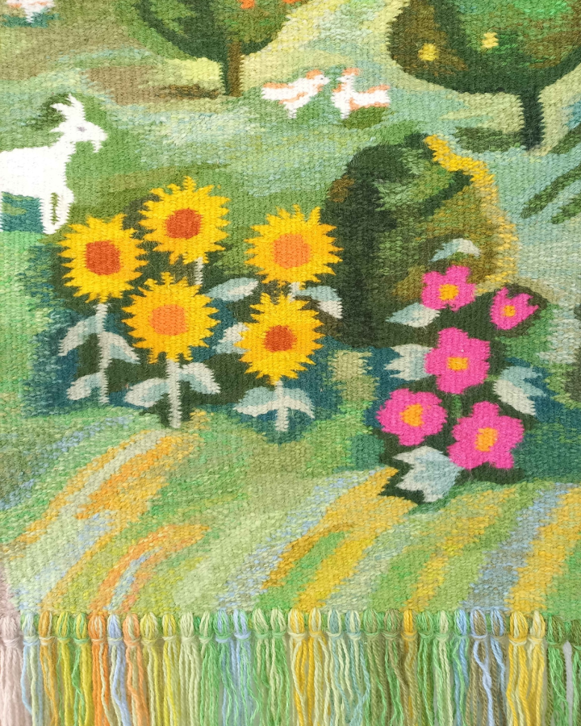

Матеріал і техніки, за допомогою яких ткали килими
У традиціях українського килимарства зазвичай використовували вовну, льон і коноплі, а також натуральні фарбники, що виготовлялися з рослин і навіть комах. Техніка давнього примітивного ткацтва, до того як виникли верстати, була ручною й досить кропіткою. Для цього ткач використовував деревʼяну раму, поперек якої натягувалися нитки «основи».
Поміж ними ткач вплітав нитки, з яких складався орнамент. Килим не ткали на всю ширину одночасно, окремо – тло, окремо – візерунки. Готовий килим вичісували гребінцем. Унаслідок ручної праці та простої технології поверхня килимів виходила нерівною, але ці найстаріші вироби сьогодні і є найбільш цінними.
У 19 столітті техніка стала більш механізованою й загалом культура килимарства пішла на спад. Проте у 20 столітті це явище почали досліджувати та збирати. Зокрема, для цього багато зробив український художник Федір Кричевський.

Про орнаменти килимів у різних регіонах України та їхнє значення
Залежно від регіону українські традиційні килими, так само як і традиції вишиваних сорочок, мали свої особливості. Наприклад, для Полтавщини, Київщини, Чернігівщини характерні квіткові орнаменти та помітні впливи східної культури, барокові мотиви. Натомість килими західних регіонів України (Галичина, Буковина, Волинь) мають характерний геометричний або рослинно-геометризований орнамент. Українські килими справді мають свій оригінальний стиль і самобутні поєднання кольорів. Проте сказати точно, які сенси закладали українці в ті чи інші форми, ми не можемо. Найімовірніше, візерунки та форми, що трапляються у традиційних килимах, працюють у тій самій системі символів, що й візерунки писанок чи вишивки – вони відсилають до глобальних, усеохопних і найважливіших тем життя та смерті, циклічності, поняття роду та шани до світобудови.
Про кольори
Першочергово використовувалися традиційні натуральні барвники. Відповідно, кольори не були яскравими чи насиченими. Кольори, так само як і орнаменти, були характерно різними для різних регіонів. Наприклад, на Закарпатті переважали поєднання бордових і темно-синіх, червоних і зелених, фіолетових і жовтих із незначним вкрапленням сірих, білих і рожевих барв. Тоді як на Полтавщині переважає спокійна кольорова гама: килими з блакитним, золотаво-жовтим або чорним тлом, рідше – з білим, сірим, зеленим і коричневим. Чорний колір традиційно символізував землю та багатство, жовтий – сонце та життя, червоний – кров і кохання, зелений – природу.

Українські бренди з традиційними килимами
- Fully Wooly
- Mapico
- Solomia